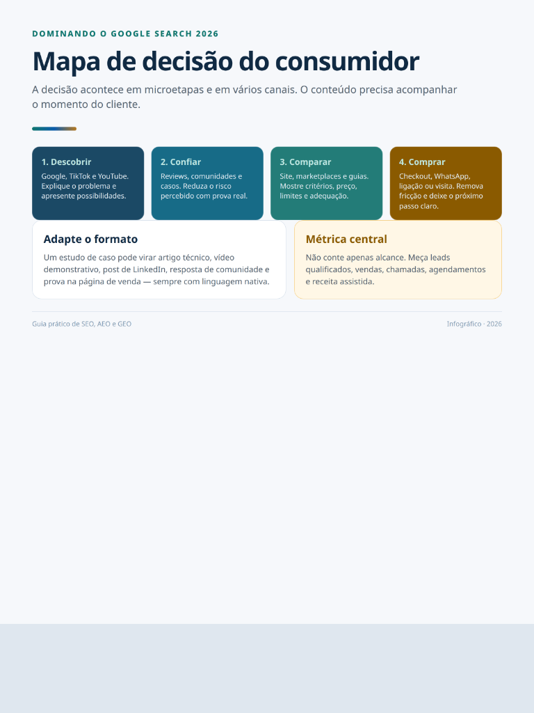
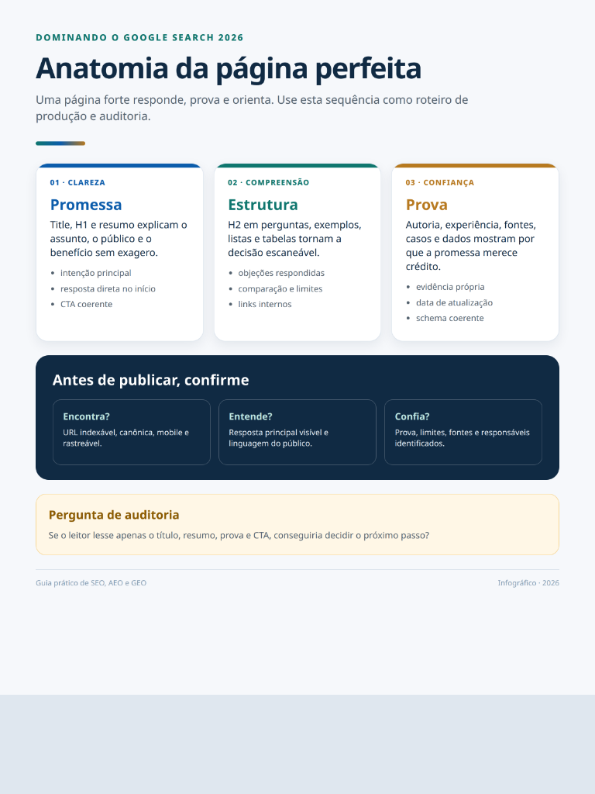
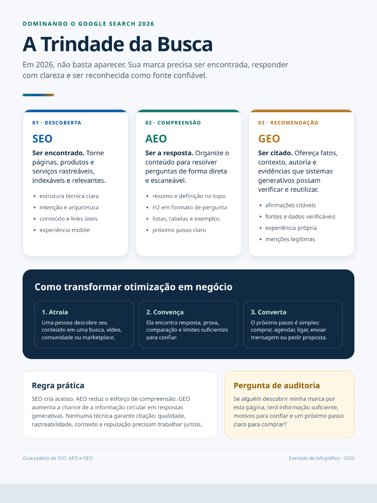

Apareça no Google. Seja citado pela IA. Converta melhor.
O guia definitivo para entender a nova busca: o que funciona no Google tradicional, o que mudou e como preparar seu site para a IA.
Compra segura.
FORBES
EXAME
INFO
DOMINANDO A BUSCA ORGÂNICA
O guia definitivo de SEO, ASO e GEO
Acesso Imediato
SEO EM2026
A IA não matou o SEO.
Ela expôs o marketing fraco.
SEO
A fundação de tudo.
SEO Técnico
Qualidade do conteúdo
Sinais de autoridade
Backlinks e confiança
AEO
SEO com respostas melhores.
Estrutura de FAQ
Respostas diretas
Formatação útil
Foco na intenção
GEO
LLMs confiam em autoridade.
Menções de marca
Citações
E-E-A-T
Autoridade tópica
AIO
A IA segue a visibilidade.
RP + SEO
Presença multiplataforma
Consistência da marca
Reconhecimento total
Novas siglas.
Os mesmos fundamentos.
Como a busca por IA realmente funciona
Google
Indexa a web e ranqueia os melhores resultados.
ChatGPT
Busca via Bing, parcerias e sinais da web.
P
Perplexity
Motor de busca baseado em recuperação (RAG).
✦
Gemini
Profundamente conectado ao ecossistema Google.
→ TODOS OS CAMINHOS AINDA LEVAM À AUTORIDADE DE BUSCA.
Metodologia
Um mapa prático: da dúvida em transformar ação.
Sem teorias complexas. Um guia desenhado para quem precisa de resultados rápidos, focado no que realmente importa na prática.
1.
Atrair a atenção
Entenda exatamente como os usuários e as IAs buscam hoje, e crie conteúdos que respondem perfeitamente à intenção de busca.
2.
Construir autoridade
Aprenda a sinalizar confiança e relevância tópica, obrigando os motores de busca a reconhecerem você como o maior especialista.
3.
Converter em Vendas
Tráfego sem conversão é métrica de vaidade. Transforme visitantes em clientes pagantes com estruturas de página otimizadas.
O que você vai descobrir no e-book.
Mais de 100 páginas de puro conteúdo prático.
O novo SEO e AEO
O que ainda funciona no Google Clássico e como adaptar suas páginas para responder às novas intenções.
Pesquisa de palavra-chave
Esqueça volume de buscas. O segredo agora é mapear a intenção correta de quem está pronto para comprar.
Mapeamento de jornada
Como estruturar um funil de conteúdo que guia o usuário desde a dúvida inicial até o clique no checkout.
Copy de conversão
Técnicas de escrita persuasiva para páginas de venda e artigos que retêm a atenção e geram desejo.
Otimização técnica
Checklist de velocidade, marcação schema, sitemaps e configurações essenciais de forma simplificada.
Métricas que importam
Como parar de olhar métricas de vaidade e usar o Google Analytics e Search Console para gerar lucro.
Templates Inclusos
Aprenda com uma página. Pratique com dezenas.
Templates e planilhas prontas para você copiar e colar na sua operação diária.

Mapa de Decisão
O roteiro exato de microetapas para acompanhar o cliente desde a descoberta até a compra.

Anatomia da Página Perfeita
Como estruturar clareza, compreensão e prova social para criar páginas que convertem e ranqueiam.

A Trindade da Busca
O infográfico definitivo unindo SEO Clássico, AEO (Respostas) e GEO (Inteligência Artificial).
Público-Alvo
Para quem é este guia?
Se você precisa de mais clientes chegando até você de forma orgânica e qualificada, a resposta está na busca.
Empresários
Donos de negócios físicos ou digitais que não querem mais depender exclusivamente de tráfego pago (anúncios caros) para vender todos os dias.
Nova Profissão
Para quem está procurando se preparar e faturar dominando uma das habilidades mais valiosas do mercado: prestando consultoria em SEO e IA para empresas.
Autônomos
Dentistas, advogados, nutricionistas e especialistas que precisam ser o primeiro resultado no Google e na IA quando o cliente busca perto de casa.
Módulo Bônus
SEO Local para quem precisa ser encontrado perto do cliente.
Se você tem um negócio físico (clínica, restaurante, escritório), o SEO Local é a sua maior arma de vendas. Aprenda a dominar o Google Meu Negócio.
Otimização de Perfil de Empresa
Estratégia para captar e responder avaliações
Ranqueamento no Google Maps Local Pack
O Sistema Completo
Um produto que explica o método antes de pedir a compra.
Nossa metodologia cíclica garante que seu site não apenas atraia cliques, mas traga leads qualificados e crie um ativo de longo prazo.
Pesquisa & Intenção
Conversão & Retenção
Estrutura Técnica
Autoridade Híbrida
Método Contínuo
Pare de publicar no escuro.
Tenha o mapa exato do que escrever, como estruturar e onde focar para trazer tráfego qualificado que converte todos os dias.
De R$ 97,00HOJE COM DESCONTO
R$ 19,90
Acesso imediato e vitalício.
Pagamento Seguro
Garantia de 7 dias
Resumo do Pedido
Liberação automática após confirmação
E-book: Dominando a Busca OrgânicaPDF Oficial Completo
Pack de Templates (Redatores & Planilhas)Acesso via Google Drive
Bônus Exclusivo: Módulo SEO LocalGratuito nesta oferta
Enviado para o seu e-mail
Assim que o pagamento for aprovado.
Dúvidas Frequentes
Antes de começar: veja se este guia é para você.
Como aparecer no Google e como fazer SEO?
O e-book mostra como fazer SEO com pesquisa de intenção, páginas úteis, conteúdo rastreável, links internos, autoridade e medição no Search Console. Nenhuma posição é garantida, porque o resultado depende do mercado, do site e da execução.
Como atrair clientes pelo Google e colocar minha empresa no Google?
Você aprende a organizar páginas de serviço, oferta, prova e chamada para ação, além de entender como conectar busca orgânica, Perfil da Empresa no Google e conversões.
Como colocar minha loja no Google Maps?
O módulo de SEO local explica como trabalhar informações reais, categoria, serviços, área atendida, horários, fotos próprias, avaliações honestas e consistência no Perfil da Empresa no Google.
Como aparecer na primeira página do Google?
O método ensina diagnóstico, intenção, qualidade de conteúdo, SEO técnico, autoridade e ciclos de melhoria. A primeira página não pode ser prometida, mas o processo para melhorar a relevância fica claro.
Como aparecer no ChatGPT e usar o ChatGPT para empresas?
O conteúdo explica como produzir informação clara, útil, verificável e bem contextualizada para diferentes experiências de busca e resposta por IA. Não há técnica garantida para forçar uma citação.
Como otimizar site para o Google?
Você encontra orientações sobre indexação, arquitetura, dados estruturados coerentes, Core Web Vitals, conteúdo, acessibilidade, links e medição. O site deve ser bom para pessoas antes de ser otimizado para robôs.
O que é SEO na era da inteligência artificial, AEO e GEO?
SEO ajuda páginas a serem encontradas; AEO organiza respostas para perguntas; GEO, ou Generative Engine Optimization, trabalha clareza, contexto, evidência e reputação em mecanismos generativos. O e-book funciona como um método GEO IA prático, não como promessa de resultado.
Isso é um curso de GEO IA ou um guia de SEO para iniciantes?
É um e-book digital que serve como guia de SEO para iniciantes e também avança para SEO e GEO, conteúdo, autoridade, SEO local, e-commerce, medição e canais fora do Google.
O que recebo por R$ 19,90?
Você recebe o e-book digital completo, 14 infográficos, plano de 90 dias, checklists, templates, prompts e o módulo de bônus sobre SEO local.
O checkout já está funcionando?
A página está pronta para receber o link real de checkout. Neste momento, o botão sinaliza a etapa de compra, mas não simula um pagamento integrado.